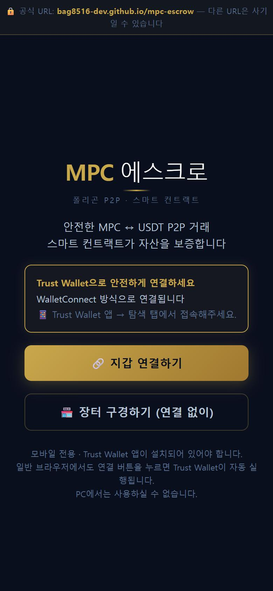
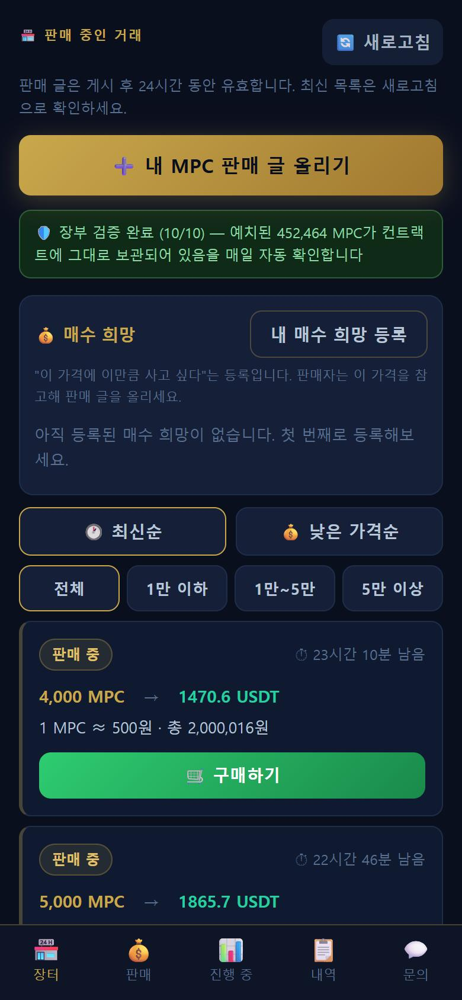

차간톨고이
시추 탐사 기록

 시추 로드 (드릴 파이프)
시추 리그
시추 로드 (드릴 파이프)
시추 리그

 현장 사무소
게르 숙영지
현장 사무소
게르 숙영지
바양누르 솜(Bayannuur Sum)
- MPC는 단일 코인 사업이 아니라 광산 RWA 발행 표준 인프라를 표방합니다 — 자원(L1) → 구조화(L2) → 토큰화(L3) → 유통(L4)의 4계층 구조.
- 첫 자산은 차간톨고이 전략광물 광구 — 규소·리튬·희토류를 담고 있다고 회사는 밝히고 있습니다.
- 매장량·품위 수치는 JORC / NI 43-101 공인 보고서 확정 전에는 공개하지 않는 원칙을 명시하고 있습니다.
- 레지스트리·오라클 등 핵심 설계는 국가 중립이며, 몽골은 첫 번째 관할 프로파일입니다.
- 참여 보상 체계(My Mine)는 2026년 9월 opBNB 체인의 Crew 지급으로 전환 완료됐습니다.
- Bolor Geo MPC Corp. — $MPC 토큰 발행사. MPC 생태계의 공식 발행 주체.
- Bolor Geo SG Pte. Ltd. — 플랫폼 소프트웨어·Web3 기술 개발 담당.
- Bolor Geo LLC — 몽골 현지 광산 법인. 탐사 라이센스 XV-022460 보유, 차간톨고이 프로젝트 수행.
- 발행·개발·광산을 별도 법인이 나눠 맡고, 각 법인의 책임을 명시한다고 공식 홈페이지에 밝히고 있습니다. 경영진은 CEO Bayo Okusanya(프린스턴대), COO Quentin Ho(시카고 부스 MBA), 광산총괄 Altankhuyag Gankhuyag(몽골국립대 광화학) 등 6인 공동창업 체제입니다.
포장도로 직결
노두 연장
확인 원소
시추공
실물자산 기반 RWA 유틸리티 코인
지금까지 13개 공을 시추했고 ALS·SGS 분석 보고서를 받으며 검증하고 있습니다.
아래는 공식 홈페이지에 공개된 실제 현장 사진입니다.

- 차간톨고이 광구(6,481ha)에서 지금까지 시추공 13개를 뚫었고, ALS·SGS로부터 분석 보고서를 수차례 받아 검증 진행 중
- 백운모가 풍부한 페그마타이트층이 여러 시추공에서 확인 — 분석 결과 약 60조원 규모의 가치 평가가 이루어질 것으로 예상한다고 밝힘
- 금은 몽골과학기술대 현미경 분석에서 검출, 희토류·루비듐·리튬은 추가 시추 후 공인기관 검증 예정 — "확인된 것과 확인 중인 것을 구분해 투명하게 공개"
방송 전문 펼쳐 읽기 (자동 자막 기반)
세계 각국이 핵심 광물의 안정적인 확보와 공급망 다변화를 경제안보의 핵심 과제로 삼고 있습니다. 최근에는 특히 풍부한 광물 자원을 보유한 몽골이 자원 개발 시장으로 주목받고 있습니다. 오늘은 몽골에서 핵심 광물 탐사을 하고 있는 볼로르지오의 최병호 경영 총괄 부사장과 함께 몽골의 자원 개발 가능성과 우리나라의 핵심 광물 공급망 전략을 짚어보도록 하겠습니다. 수사장님 안녕하세요. 안녕하세요.
최근에 세계 각국에서 몽골를 향해서 로브코를 보내고 있습니다.이 몽골이 자원 개발과 관련해서 주목받고 있는 배경 어디에 있다고 보십니까?
네. 최근 그 인도와 몽골이 그 광물과 전략물 분야에서 협력을 강화하는 등 어 몽골을 향한 국제 사회에 관심이 굉장히 뜨겁습니다. 어 저희도 몽골을 선택한 이유가 어 이와 맥락이 같은데요. 어 몽골은 국가 경제 규모나 잠재 가치가 약 1400조원에 달하는 80여 중여 광물이 부존된 자원 부국입니다. 광업이 국가 경제의 핵심 산업이기 때문에 어 법과 행정 체계가 비교적 잘 갖춰져 있고 특히 중국과 러시아 사이에서 제3회 이웃 외교를 펼치고 있기 때문에 한국과의 협력 의지도 굉장히 강합니다. 어 서울에서 비행기로 약 3세시간대 거리라 현장 관리도 수월하다는 장점이 있습니다. 어, 특히 저희가 어, 탐사 중인 차간 톨고의 광고의 경우 도로, 교통, 전기, 물 등 어 인프라가 전부 잘 구축되어 있어서 현장 탐사 및 개발을 진행하데 있어서 최적에 인프라를 갖추고 있습니다. 어, 저희는 2023년도에 몽골 법인을 설립하였고 어, 현재 어, 탐사 라이센스도 취득하였습니다. 어 울란바토로 본사와 어 서울의 어 사무소를 두어서 두 거점을 잘 운영해 나가고 있습니다. 지난 7월 이재명 대통령이 몽골를 국빈 방문하고 또 한 몽골 정상 회담을 진행한 바 있습니다. 그리고이어서 지난달 29일에는 일본과 몽골의 정상 회담이 진행됐습니다. 이처럼 몽골에 대한 관심이 뜨거운데이 실제 자원 협력과 관련해서이 주목할 만한 결과로 좀 이어지고 있습니까?
네. 일본 역시 공급망 다변화가 굉장히 큰 숙제이기 때문에 몽골의 풍부한 희소 금속과 어 핵심 광물에 관심이 많습니다. 어 그 잠재력을 몽골로 지금 지정하면서 어 인프라 지원 및 어 공동 탐사 등 실질적인 외교 협력 방안에 대해서 논의한 것으로 저희는 알고 있고요. 어 글로벌 국가들이이 몽골를 전략적 거점으로 살 삼고 있는 이유가 바로 여기에 있습니다.
네. 글로벌 지정학적 갈등이 이어지면서 히토리와 리튬 등이 핵심 광물의 안정적인 확보가 국가 경쟁 여으로 떠오르고 있는 상황입니다. 현재 우리나라의 핵심 광물 부존 현황 그리고 자원 개발 가능성 어느 정도라고 보십니까? 아, 네. 어, 솔직히 말씀드리면 우리나라는 그 핵심 광물 보존 여건이 넉넉한 나라는 아닙니다. 어, 에너지 경제 연구원에 따르면 어, 2024년 기준으로 했을 때 정부가 지정한 어, 핵심 강물 33종 가운데 어 30종이 어 전량 수입 의존에에 의존을 하고 있습니다. 어, 다만 그 가능성이 없는 건 아닌데요. 어, 대표적인 예가 그 영월 상동 강산입니다. 지난해 재동을 다시 했고 올해 어 상업적인 텅스텐 생산을 어 진행하고 있는데요. 어 한때 세계 최대 텅스 강산이었던 곳이 이제 다시 제개가 된 거죠. 어 결국 국내 자원은 어 전량 자급이 아니라 어 일부 전략 광물의 거점으로 활용이 돼야 되고 나머지는 어 해외 어 자원개로 개발로 채워져야 하는 그런 구조라고 생각합니다.
말씀하신 것처럼 우리나라의이 핵심 광물 상당 부분을 수입에 의존하고 있는 상황입니다.이 국내 자원만으로는 공급망을 안정화하기가 굉장히 어려운 상황인데 현실적으로 봤을 때 어떤 대응 전략이 필요하다고 보십니까?네 네. 저는 세 가지 축이 어 동시에 진행돼야 된다고 생각하고 있는데요. 첫 번째는 어 해외 자원 개발을 통한 직접 지분의 확보. 두 번째는 비축 확대. 세 번째는 재자원화입니다. 특히 재자원화는 어 정부도 현재 7%인 핵심광물 재자원화율을 어 2023 2030년까지 20%로 어 끌어 올리겠다는 목표를 설정하였는데요. 어 그러나 비축 어 비축과 재원화는 버티기 전력의 일환으로 볼 수 있고요. 근본적으로는 공급원을 늘리는데 어 해외 해외 자원을 개발하는 것에 중점을 둬야 된다고 생각하고 있습니다. 어 특정 국가 한 곳에 의존하지 않고 어 여러 나라의 공급처를 어 분산시켜서 이것이 가장 현실적인 공급망 안정와 어 전략으로 수립될 수 있도록 노력을 해야 된다고 생각합니다.
네. 현재 몽골에서 진행 중인이 탐사와 시추 과정에서 주목할 만한 광물이나이 지질학적인 증후가 확인이 됐는지 그리고 또이 전략 광물의 부존 가능성 어떤 기준에 따라서 이렇게 확인이 되는 건가요?네 네. 그 차간 톨구의 광구는 어 몽골 볼가나이막 바양노르솜 어에 위치해 있고요. 6,481의 규모의 어 광고입니다. 어 지금까지 13개의 공을 시초하였고 국제 공인 분석 기관인 ALS와 SGS로부터 수차례 어 분석 보고서를 전달받았으며 투명하게 검증을 진행하고 있습니다. 어 가장 주목하고 있는 첫 번째는 어 배운모입니다. 어 배운모가 풍부한 페그마 타이트 층이 어 여러 광구에서 확인이 됐고 어 여러 공에서 확인이 되었고 일부 공에서는 녹색 배군모도 관찰이 되어서 어 굉장히 기대하는 바가 큽니다. 분석 결과 약 60조원 규모의 가치 평가가 이루어질 것으로 예상을 하고 있고요. 어 두 번째는 금입니다. 어 몽골 과학 기술대학교에서 어 입자를 현미경으로 확인했을 때 어 검출이 되었고요. 어, 아직 시추하지 않은 어, 지역도 있기 때문에 어, 기대감이 높아지고 있습니다. 또한 히토류 발견 및 루비디움 그리고 리튬 확보 이슈에 대한 것도 현재까지 의미 있는 자료가 나왔지만 어, 추가적으로 시출을 진행한 다음에 어, 공제 분석 기간에 어, 의뢰하여서 객관적으로 검증을 받을 계획입니다. 어, 저희는 확인된 것과 확인 중인 것을 어, 명확하게 구분해서 말씀드리는게 에, 맞다고 생각합니다. 히토류나 리튬 같은이 핵심 광물은 반도체와 배터리뿐만이 아니라 방산, 자동차, 화학 등이 다양한 산업들과 또 연결이 되어 있습니다. 국내 기업들이 해외 자원 개발을 통해서이 확보한 광물을 실제 산업 공급망으로 연결하기 위해서 어떤 생태계가 좀 필요하다고 보십니까?
네. 광산만 있다고 해서 공급망이 되는 것은 아닙니다. 어 원강을 캐는 것과 반도체 배터리 공장에 어 들어가는 소재 사이에는 어 선광, 정재, 어 가공이라는 긴 중간 단계가 있는데 현재이 긴 중간 단계를 중국에서 많이 검머지고 있다는 것이 어 굉장히 핵심 문제인데요.이를 해결하기 위해서는 세 가지가 필요하다고 생각합니다. 어, 첫 번째는 수요 기업이 개발 초기부터 구매 장기적으로 구매 계약을 설정하는 것. 두 번째는 국내 또는 우반국의 중간 가공 거점을 구축하는 것. 그리고 마지막으로 세 번째는 탐사부터 가공까지 어, 장기 자금을 어, 대줄, 금융을 지원하는 것인데요. 어, 광상 개발사와 가공업체, 수요 기업 그리고 금융이 하나의 사술로 묶여야 비로소 진짜 공급망이 완성된다고 생각합니다.
네.이 이 자원 개발 사실 장기간의 투자와 불확실성을 감수해야 하는 부분입니다. 앞으로 우리나라가 핵심 광물 공급망에서 경쟁력을 확보하기 위해서 가장 먼저 풀어야 할 과제 어디에 있다고 보십니까?
네. 저는 일관성이라고 생각합니다. 어, 광산 하나가 탐사해서 어, 생산까지 가는데 보통 10년이 넘게 걸립니다. 어, 그 과정에서 정책이 몇 년마다 바뀌면 민간은 아, 장기적으로이 사업을 진행하데 있어서 굉장히 어려움을 겪을 수밖에 없고요. 정부 정책이 정권과 상관없이 꾸준히 이어져야 되고 어, 민간 역시 국제 기준에 맞는 투명한 데이터로 어, 더욱 신뢰를 쌓아야 하겠습니다. 어 또한 정부가 탐사 리스크를 일부 분담하는 부분 그리고 민간은 현장 실행과 어 기술력을 맞는 명확한 역할 분담과 지원이 뒤파침되어야 된다고 생각합니다. 저희도 확인단 결과는 확인된 대로 진행 중인 것은 진행 중이라고 투명하게 공개하여 한 단계씩 나아가도록 하겠습니다. 이런 신뢰가 쌓여야만이 투자도 따라올 수 있고 결국 국가 공급 경쟁력으로 이어진다고 생각합니다.
네. 마지막으로이 부사장님께서는 현재이 몽골 현지에서 사업을 하시면서이 한국과 몽골의 어떤 가교 역할을 민간에서 하고 계신 것으로 알고 있습니다. 우리나라의 다른 기업들도 몽골 시장에 관심이 많은데 사실 몽골 시장의 중요성에 대해서는 잘 모르는 부분들도 있습니다. 앞으로이 몽골 시장이 더 얼마나 중요해지는지 대해서 저 시청자들께 마지막으로 한 말씀 좀 부탁드리겠습니다.
네. 저희가 추진하고 있는 차간 톨고 프로젝트 역시 단순히 광물을 개발하는 사업이 아니라 한국과 몽골이 어 함께 성장할 수 있는 자원 협력의 새로운 모델을 만들어 가는 어 과정이라고 생각합니다. 앞으로도 책임 있는 자원 개발과 지속적인 협력을 통해서 어 대한민국의 자원 안보에 기여하고 한몽 경제 협력의 미래를 여러데 있어서 최선을 다하도록 하겠습니다. 감사합니다.네
여기까지 듣겠습니다. 지금까지 최병호 블로르지 경영 총괄 부사장과 몽골의 자원 개발 우리나라의 핵심 광물 전략까지 짚어봤습니다. 부사장님 오늘 말씀 감사합니다.
※ 유튜브 자동 생성 자막을 그대로 옮긴 것으로, 일부 음성 인식 오탈자가 있을 수 있습니다.
판매자의 MPC를 블록체인 금고가 먼저 보관하고,
구매자의 USDT 입금이 확인되는 순간 자동으로 맞교환합니다.


에스크로로 안전하게
상장 전이라도 먼저 보내고 떼일 걱정 없이 거래할 수 있습니다
이 리포트에 순서대로 기록하고 있습니다.
어떻게 접속하나요?
공지의 링크를 누르면 어떤 브라우저에서든 바로 이용할 수 있습니다. 자주 쓰실 거라면 첫 화면의 [홈 화면에 앱 설치]로 앱처럼 설치해두면 편합니다.
아이폰인데 홈 화면 설치가 안 돼요
카카오톡 안에서는 설치가 안 됩니다. 메뉴(…)에서 [Safari로 열기] → 공유 버튼(⬆) → [홈 화면에 추가] 순서로 진행하세요.
Trust Wallet이 꼭 필요한가요?
네. 거래 자산(MPC·USDT)이 본인의 Trust Wallet에 있어야 하고, 모든 거래는 본인이 지갑에서 직접 서명해야 실행됩니다.
판매 조건이 있나요?
수량 100~100,000 MPC, 1개당 최소 500원(50원 단위), USDT 환율은 실시간 자동 적용됩니다.
판매 글은 얼마나 유지되나요?
24시간 유지됩니다. 기간 내 구매자가 없으면 글은 내려가고, [진행 중] 탭의 [만료 처리]를 눌러야 MPC가 지갑으로 돌아옵니다.
지갑에 '승인 완료 −10,000 MPC'가 떠요. 두 번 나간 건가요?
아닙니다. '승인'은 코인 이동이 아니라 허락 서명 기록인데 지갑이 마이너스처럼 표시할 뿐입니다. 잔액을 확인하면 실제로는 전송 1건만큼만 줄어 있습니다.
수수료가 있나요?
서비스 수수료는 없습니다. 블록체인 가스비로 거래당 몇십 원 상당의 POL만 듭니다. POL은 거래소에서 1~2개 사두면 수십 번 거래할 수 있습니다.
사기당할 위험은 없나요?
자산은 사람이 아니라 스마트컨트랙트가 보관하고, 양쪽 조건이 맞는 순간 동시에 교환됩니다. '먼저 보내고 못 받는' 상황이 구조적으로 불가능합니다.
취소했는데 MPC가 안 들어와요
블록체인 처리로 최대 10분 걸릴 수 있습니다. 10분이 지나도 안 오면 앱 하단 [문의]로 지갑 주소를 알려주세요. 관리자가 처리 상태를 확인해 드립니다.
지갑 연결을 눌러도 반응이 없어요
① Trust Wallet 설치 여부 확인 → ② Trust Wallet을 완전히 종료 후 재시도 → ③ 그래도 안 되면 브라우저를 껐다 켜고 다시 접속하세요.
PC에서도 이용할 수 있나요?
보안을 위해 모바일 전용으로 운영됩니다. 휴대폰으로 이용해 주세요.
'지갑 앱의 네트워크 연결이 불안정합니다' 오류가 반복돼요
일부 최신 기종(갤럭시 S25, 폴드7 등)의 Trust Wallet 앱 자체 문제로, 자산과는 무관합니다. Trust Wallet을 완전히 종료한 뒤 홈 화면의 에스크로 앱(또는 삼성 인터넷)으로 접속해 [예비 연결 방식] 버튼을 이용하세요. 이 기종은 Trust Wallet 앱 안에서 주소를 열면 같은 오류가 반복됩니다.
오류창이 떴을 때 어떻게 문의하나요?
오류창의 [오류 정보 복사] 버튼을 누르면 원인 파악에 필요한 정보가 복사됩니다. 이를 커뮤니티 문의에 붙여넣으면 바로 확인해 드립니다.
- Bolor Geo MPC Corp. — $MPC 토큰 발행사. MPC 생태계의 공식 발행 주체.
- Bolor Geo SG Pte. Ltd. — 플랫폼 소프트웨어·Web3 기술 개발.
- Bolor Geo LLC — 몽골 현지 광산 법인. 탐사 라이센스 XV-022460 보유, 차간톨고이 프로젝트 수행.